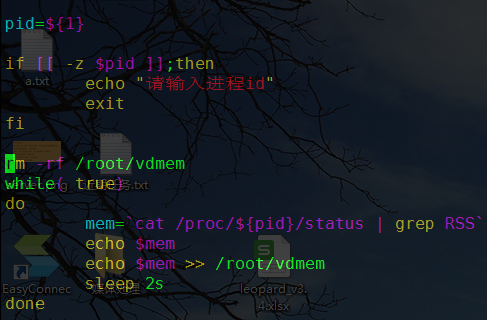
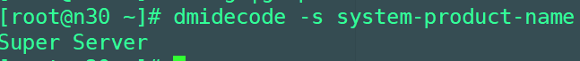
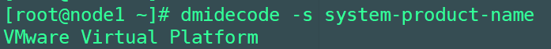

记录一下自己常用的centos7上的命令行
mount挂载
虚拟机和主机共享目录
mount -t cifs //192.168.30.97/code /mnt -o username=Administrator,password=Helios
/code 是主机上的目录，需要设置为共享的
username 为主机的用户名
password 是主机的密码
/mnt 是虚拟机上的目录
卸载：
umount /mnt
卸载失败可以重启服务器
nohup常驻服务
linux平台上，要在后台运行脚本的话，一般是在命令之后加上&即可。
常驻服务的运行，退出终端也可以的命令行
nohup
具体方法
nohup ./videotool &
查看系统的状态的命令
查看内存
free -h
查看磁盘使用
df -h
查看文件大小
du -sh 11.mkv
查看进程的线程数
ps -T -p pid
查看centos7的物理核数
cat /proc/cpuinfo| grep "physical id"| sort| uniq| wc -l
查看centos7的逻辑核数
cat /proc/cpuinfo| grep "processor"| wc -l
测试系统的io速度
time dd bs=4M count=1024 if=/dev/zero of=test_02 conv=fdatasync
复制
cp -rfd ./oldname ./newname
-r 复制目录
-f 强制复制
-d 复制软连接
忽略冲突复制
\cp -rfd ./oldname ./newname
定时任务
基本格式：
* * * * * command
含义：
分 时 天 月 周
使用*/n 表示此字段上每隔n执行一次，同时注意如果低时间使用了，会覆盖高时间的*/n,不要同时使用某一天与一周的某一天，如果这个两个相等，则会执行两次
添加
crontab -e
查看
crontab -l
删除
crontab -r 这个表示删除所有的定时任务，如果需要删除单个，则使用crontab -e 进行编辑，然后删除某一行
获取服务运行时使用的内存

控制进程使用cpu数目
获取进程id
pgrep -f servername
pidof servername
设置CPU使用
注意： 默认情况下，taskset不会影响进程的所有线程（LWP）。使用任务集的“-a”选项来影响流程中的所有线程
一般可以这样设置： taskset -apc 0 8991 (这个目前最有效）
脚本中生成随机数
UUID=`echo $RANDOM`
记录程序运行的资源到文件中
yum install -y time
/usr/bin/time -v -o video.log ffmpeg -i xxx.mp4
查看机器是物理机还是虚拟机
dmidecode -s system-product-name
结果如图：


搜索
grep
搜索文件中包含某个单词
grep -rn weiyang *
过滤本身
ps -ef | grep vim |grep -v grep
编码问题
centos7常常会遇到一些编码问题，我们可以通过命令行来进行一些编码的转码
enca
支持的编码比较少，一些无法转换，如UTF16,UCS-2就无法通过这个转换
直接识别字符集
enca -L zh_CN test.cpp
转换命令简单
enca -L zh_CN -x UTF-8 test.cpp or enca -L zh_CN -x GB2312 test.cpp
iconv
可以支持多种编码，有一个缺点，必须知道原来文件的编码
iconv -f UTF-16 -t UTF-8 b.txt -o uni3.txt
任意转换
所有可以通过enca和iconv两者结合来使用
iconv -f $(enca -L zh_CN b.txt |head -n 1|cut -d ";" -f 2) -t UTF-8 b.txt -o b.txt
leopard修改/opt/dana/leopard/python/fileConv.py
codecmd= 'iconv -f $(enca -L zh_CN %s |head -n 1|cut -d ";" -f 2) -t UTF-8 %s -o %s'% (input_name, input_name, input_name)